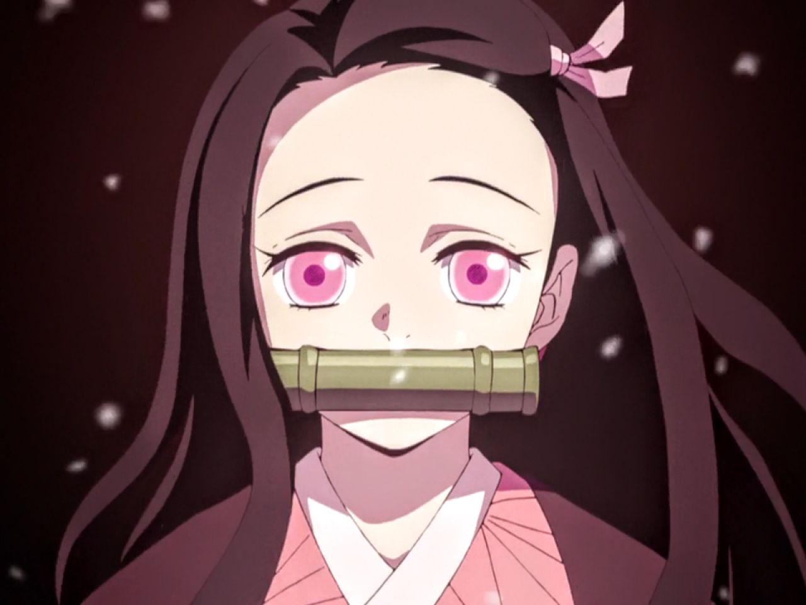
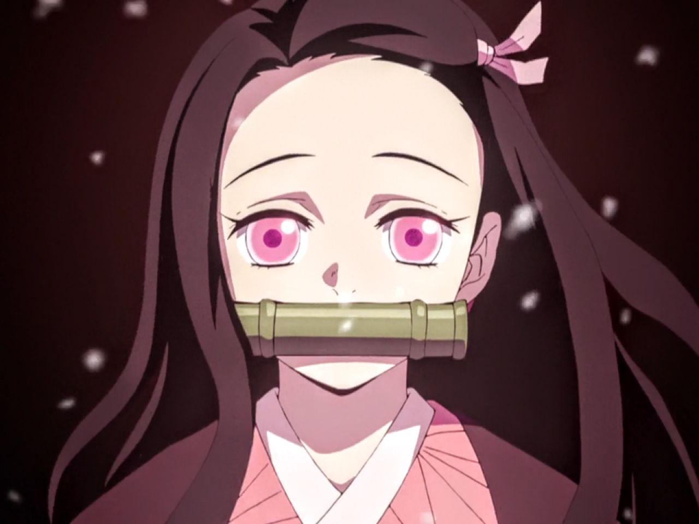
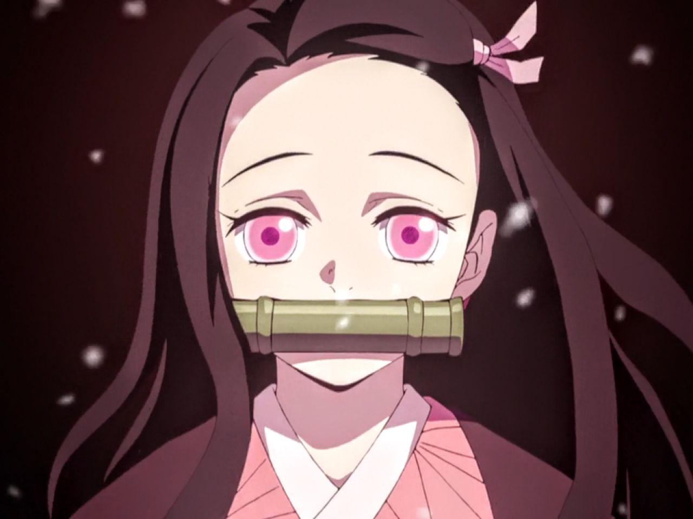
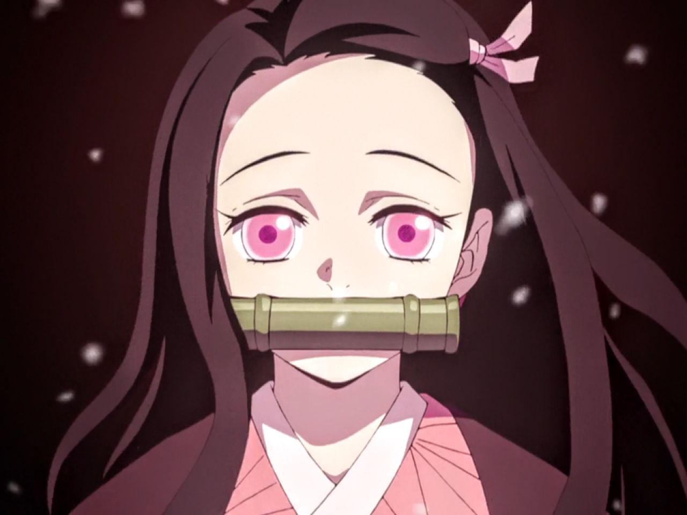
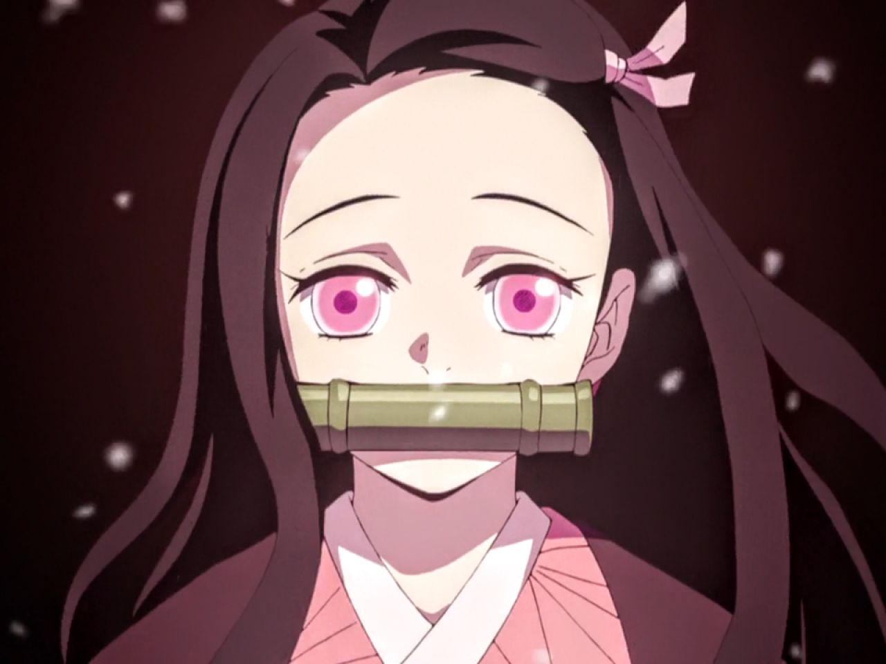

Kimetsu no Yaiba (鬼滅の刃, Kimetsu no Yaiba, "Blade of Demon Destruction"[4]) is a Japanese manga series written and illustrated by Koyoharu Gotouge. It was serialized in Shueisha's shōnen manga magazine Weekly Shōnen Jump from February 2016 to May 2020, with its chapters collected in 23 tankōbon volumes. It has been published in English by Viz Media and simultaneously published by Shueisha on their Manga Plus platform. It follows teenage Tanjiro Kamado, who strives to become a Demon Slayer after his family was slaughtered and his younger sister, Nezuko, turned into a demon.

After two years of strenuous training, Tanjiro takes part in a formidable exam and is one of the few survivors to pass, officially making him a member of the Demon Slayer Corps. He begins his work of hunting down and slaying demons alongside Nezuko, who has been hypnotized to bring no harm to humans and who occasionally helps him in battle. One of Tanjiro's assignments brings him to Asakusa where he encounters Muzan Kibutsuji, the progenitor of all demons and the one who murdered his family. He also meets Tamayo and Yushiro, two demons who are free from Muzan's control. Tamayo and Yushiro ally with Tanjiro and begin to develop a cure for Nezuko, though it will require Tanjiro to supply Tamayo with blood from the Twelve Kizuki, the most powerful demons under Muzan's command.For more Information just visit: Kimetsu no Yaiba
 
